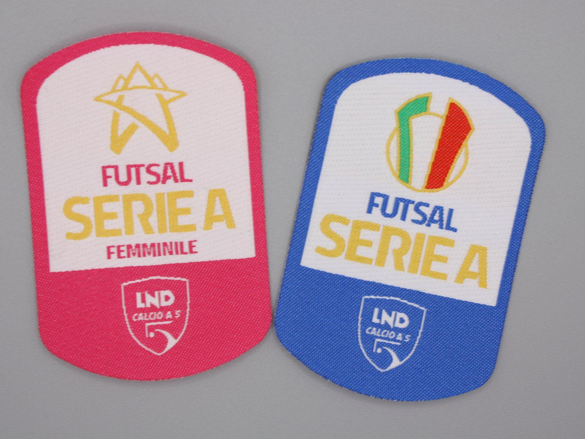

Custom Woven HD Patches
High-definition weaving suited to logos with fine details, thin lines and text that require more precision than traditional embroidery, while keeping a thin profile. "HD" is the name we use for this technique: it describes the level of detail, not a certified technical standard.

Technical specifications
- WeaveDense, high-definition thread
- ThicknessThin, almost flat effect
- DetailFine, suited to small text and thin lines
- BackingSew-on, hook-and-loop or iron-on (subject to technical review)
- Minimum orderAssessed per project
When to choose Woven HD
Recommended for logos with small fonts, many colours or fine graphic details, typical of fashion brands, sportswear and technical products. If you're after the relief and texture of thread, the embroidered patch remains the most suitable choice; for photographic graphics and short runs, consider the sublimated patch.
The iron-on backing is available subject to technical review: the result of heat application depends on the garment's fabric and conditions of use. Learn more on the iron-on patches page.
Does your logo have fine or small details?
Send us the artwork file: we'll check whether Woven HD is the most suitable technique.
Request a quote